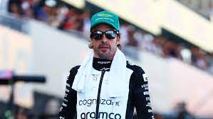

Fernando Alonso es un piloto de automovilismo de Fórmula 1 nacido el 29 de julio de 1981 en Oviedo, Asturias, España. Es ampliamente considerado como uno de los pilotos más talentosos y exitosos en la historia de la Fórmula 1.
La pasión de Alonso por el automovilismo se manifestó temprano en su vida.
Comenzó su carrera en el karting a una edad muy temprana y rápidamente demostró su habilidad en las pistas. A los 16 años, se trasladó a Inglaterra para competir en el campeonato de Fórmula 3000 británico, donde impresionó a muchos con su talento natural para la conducción.
En 2001, Fernando Alonso debutó en la Fórmula 1 con el equipo Minardi y, en su primera temporada, mostró destellos de su potencial. Luego, en 2003, se unió al equipo Renault, donde logró sus mayores éxitos en la Fórmula 1. En 2005 y 2006, Alonso se convirtió en el campeón mundial más joven de la Fórmula 1 en ese momento, logrando el título en dos temporadas consecutivas con Renault.
Después de su tiempo en Renault, Alonso compitió para varios equipos, incluyendo McLaren, Ferrari y, más tarde, regresó a Renault. Actualmente compite en Aston Martin.
Durante su carrera, acumuló numerosas victorias en Grandes Premios y continuó siendo un competidor feroz en la pista.
Además de su éxito en la Fórmula 1, Fernando Alonso ha participado en otras disciplinas del automovilismo, como el Campeonato Mundial de Resistencia de la FIA (WEC) y las 24 Horas de Le Mans, donde ha obtenido importantes victorias.
Su pasión por el automovilismo lo ha convertido en un ícono en el mundo del deporte y un embajador del automovilismo español. Su tenacidad y determinación en la pista lo han consolidado como uno de los pilotos más respetados en la historia de la Fórmula 1.
Fernando Alonso, a día de hoy, a logrado un total de 32 Grandes Premios en la Fórmula 1. También subió al podio en 97 ocasiones y logró 22 pole positions en su carrera en la Fórmula 1.
